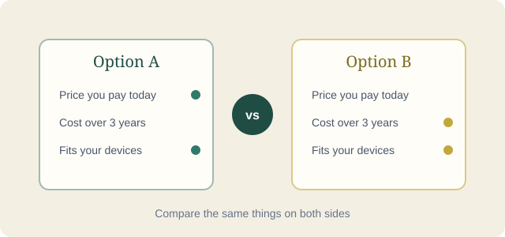

Most buying advice tells you to "consider your needs" and stops there. This is the longer version — the specific questions worth asking before you compare a single spec sheet, written from the same principles behind every comparison on this site.
Updated September 20, 2026

Before opening a single comparison page, it helps to write down, in one sentence, what the purchase actually needs to do. Not "a good laptop" — something closer to "something that survives a daily commute in a backpack, runs spreadsheets and video calls without lagging, and doesn't need to touch a power outlet for eight hours." That sentence does more filtering than an entire spec sheet, because it immediately tells you which numbers matter and which ones are noise for your situation.
A lot of buying regret comes from optimizing for a spec that never mattered in daily use. Someone buys the laptop with the fastest processor and barely opens anything heavier than a browser tab. Someone else buys the washing machine with the most programs and uses two of them for three years. The spec wasn't wrong — it just wasn't the thing deciding whether the purchase would feel worth it.
A camera body price rarely includes a usable lens. A gaming console price rarely includes a second controller. A robot vacuum price sometimes doesn't include replacement filters. List what you'd need on day one, not just the headline number on the box.
Energy ratings, fuel or charging costs, subscription requirements, and consumables (filters, cartridges, bags) can make a cheaper product the more expensive one within two or three years. This matters most for appliances, vehicles, and anything with a recurring software fee attached.
Warranty length is only half the picture. Check whether repairs are realistic where you live — parts availability, authorized service centers, and whether the manufacturer has a habit of discontinuing support after a couple of years.
Every category has two or three specifications that quietly decide most of the real-world experience, and a dozen more that mostly exist to fill out a comparison table. Here's a rough map of where to focus first.
| Category | Focus on this first | Usually safe to deprioritize |
|---|---|---|
| Phones & laptops | Years of promised software/security updates, real battery life under normal use, storage type and repairability | Peak performance score scores that don't reflect sustained, everyday performance |
| TVs & monitors | Actual peak brightness and local dimming behavior, panel type for your room's lighting, input lag if you game | Marketing terms for "smart" features rarely used after the first week |
| Home appliances | Motor duty rating, real energy label (not just the marketing tier), noise level under full load | Number of pre-set programs beyond the 3–4 you'll actually use |
| Cars | Independent crash-test results, real-world fuel or range figures, cost and availability of common parts locally | Trim-specific styling extras that don't affect running cost or safety |
| Headphones & audio | Comfort over long sessions, microphone quality if you take calls, codec support matching your actual devices | Frequency-response numbers that mean little without a listening test |
A little more detail on why those particular specs carry the weight they do: for phones and laptops, the software-update window matters more than almost anything else on the spec sheet, because a fast chipset paired with two years of security patches becomes a security liability long before it becomes physically obsolete. For TVs and monitors, the panel type interacts directly with your room — a bright south-facing living room punishes a panel with poor peak brightness far more than any spec sheet number suggests, so the "focus on this first" column depends partly on where the screen will actually sit.
For home appliances, motor duty rating is the difference between a machine built for occasional light use and one built to run daily for a decade; two washing machines can look identical on the showroom floor and still differ enormously here. For cars, independent crash-test results and parts availability matter more in markets where certain brands are common versus rare, since a rare import can turn a routine repair into a multi-week wait for a part. For headphones and audio gear, comfort during a two-hour session tends to matter more, in practice, than a frequency-response chart most buyers will never read closely — the best-measuring pair in the world is a poor purchase if it's uncomfortable after twenty minutes.
A product rarely lives alone. A phone connects to a smartwatch, a laptop connects to a monitor and a phone through a shared ecosystem, a car's infotainment system expects a particular kind of connected phone to work smoothly. Checking compatibility with what you already own — before falling in love with a specific model — prevents a surprisingly common regret: a great product that works poorly with everything around it.
Ecosystem lock-in cuts both ways. Staying within one ecosystem often means smoother file transfers, shared accessories, and fewer cables to keep track of. It also means switching later gets more expensive, since accessories and habits accumulate around one system. Neither approach is objectively correct — the honest question is whether the convenience today is worth the switching cost later, and that answer depends entirely on how likely you are to actually switch.
Marketing copy is written to be technically true and still misleading, which is a harder thing to spot than an outright false claim. A few patterns worth recognizing:
Once the essential requirement is clear, most categories still leave you with far too many options that technically qualify. A workable way through that is to separate "must have" from "nice to have" before looking at a single product page. Anything that fails a must-have gets removed immediately, regardless of price or reputation. What's left gets compared on the nice-to-haves, and price becomes the tiebreaker rather than the starting filter.
It also helps to decide in advance how much research time the decision deserves. A phone used daily for three years justifies more time than a phone case. Spending two hours comparing a ten-dollar accessory is its own kind of inefficiency — the goal is proportional effort, not maximum effort on everything.
Longevity is harder to measure than a performance score score, but it leaves clues. Products with published service manuals, standard fasteners instead of adhesive-only assembly, and an active third-party repair community tend to be easier and cheaper to keep running past the warranty period. A visible spare-parts listing on the manufacturer's own site is a small but genuine signal that the company expects the product to still be in use years later.
On the software side, checking how long a manufacturer has historically supported similar past products is often more informative than anything stated about the current one. A company with a track record of multi-year updates is more likely to continue that pattern than one making the promise for the first time.
It's also worth registering a warranty when the option exists and keeping the confirmation email somewhere findable. It costs a few minutes and occasionally turns a denied repair claim into an approved one, simply because proof of purchase date was easy to produce when it mattered.
A short pause before completing a larger purchase tends to filter out a surprising number of decisions made from excitement rather than need. Waiting a day or two on anything above a threshold that feels significant to you rarely costs a genuine deal, since most retailers repeat their major discounts on a predictable cycle. What it does cost is the impulse. If the product still looks like the right choice after that pause, that's a reasonably strong sign it actually is.
It's also worth re-reading the return policy before buying rather than after a problem shows up — restocking fees, return windows, and "as-is" clearance terms are far easier to accept calmly before money has changed hands.
One last practical habit: keep the receipt, the box, and any documentation until the return window has fully closed, not just until you're fairly sure you'll keep the product. Problems that show up in the third week are common enough that this costs nothing and occasionally saves the entire purchase price.
What is this actually for, in one sentence?
What's the full cost — accessories, running costs, and likely repairs — not just the sticker price?
Which two or three specs actually decide the outcome for this category?
Does it work with what you already own?
What happens in year two, when something needs a repair or a refill?
A phone, upgraded because the old one felt slow. Before comparing chipsets, the actual complaint was worth checking first — a phone that lags is often a phone whose storage is nearly full or whose battery has degraded, not one that needs a faster processor. Once the sentence became "something with a battery that still lasts a full day after two years, and enough storage that I never need to think about it," the comparison narrowed fast: two models that promised longer software support and used a more repairable battery design beat out a third with a marginally faster chip but a worse track record for slowing down after eighteen months.
A washing machine, replaced after the old one failed. The instinct was to buy on program count and screen size. The sentence that mattered more was "handles a family's laundry without breaking a second time in three years and without spiking the electricity bill." That reframed the comparison around motor duty rating and the actual energy label rather than the display panel, and the eventual pick was a quieter, less feature-heavy model with a better-rated motor and a five-year part guarantee, rather than the flashier unit with more wash cycles.
A car, needed mainly for a daily commute. The starting instinct was horsepower and 0-to-100 figures that would rarely be used on a commute with speed limits and traffic. Reframed as "reliable for a forty-minute commute, cheap enough on fuel that a long commute doesn't become a monthly expense line, and easy to get serviced locally," the comparison shifted toward real-world fuel economy, parts availability from local mechanics, and independent reliability surveys — and away from trim-level styling packages that add cost without touching any of those three priorities.
A software subscription, chosen for a small business. The comparison started as a feature checklist between three tools that all claimed to do everything. The more useful sentence turned out to be "needs to handle invoicing and three staff logins without a price jump next year." That ruled out two tools whose advertised price only applied to a single user, and whose per-seat cost tripled the real monthly bill once the whole team was added — a detail buried in a pricing page footnote rather than the headline number.
Not every glowing review is fake, and not every one-star review is fair, but a few patterns are worth a second look. A review that reads like a press release — full of brand-approved phrases, no specific detail about how the product was actually used, posted within days of launch alongside dozens of similarly worded reviews — is a reasonable candidate to discount. Genuine reviews tend to mention something oddly specific: a rattling sound after three weeks, a setting buried two menus deep, a comparison to the exact previous model the reviewer replaced.
It also helps to sort by "most recent" rather than "most helpful" before a purchase, since a product's quality can shift between production batches, and a helpful review from two years ago may describe a version of the product that no longer exists. A cluster of recent complaints about the same specific fault is far more informative than an old five-star average.
None of this is an argument for always buying the cheapest option that technically qualifies. Paying more makes practical sense when the extra cost buys something that shows up in daily use rather than on a spec sheet — genuinely better build quality that reduces the odds of an early repair, a support policy with a real track record rather than a promise, or a feature you've already identified as essential rather than merely nice. The test is the same either way: does the extra money change something in the sentence you wrote down at the start, or does it just look better in a side-by-side table?
Brand loyalty gets a bad reputation in buying advice, but it isn't irrational on its own. If a manufacturer has genuinely delivered reliable products and honored its warranty without a fight for several purchases in a row, that history is real evidence, not just habit. The mistake is treating it as permanent evidence that never needs rechecking — a company can change ownership, cut corners on a specific product line, or quietly reduce support quality while the reputation built by earlier products lingers for years. Worth a quick check: does the specific model you're considering share the track record of the brand overall, or is it a newer line without the same history behind it yet?
Should I always buy the highest-rated option? Not automatically — check what the rating is actually averaging. A product rated for raw performance might rank below one rated for reliability, even if the second is the better fit for how you'll use it.
Is it worth waiting for the next model? Usually only if a specific, confirmed improvement matters to your stated need. Waiting indefinitely for "something better" rarely arrives at a natural stopping point.
How many options should I compare before deciding? Three is usually enough once the must-have filter has been applied. Beyond that, more options tend to add research time without meaningfully improving the decision.
What if two options score almost identically on everything? That's usually a sign the deciding factor isn't in the spec sheet at all — it's whichever one is easier to buy locally, has better after-sales support in your area, or simply fits an accessory you already own. A near-tie on paper is permission to let a practical detail break it.
Of everything above, if only one habit survives, make it this: before reading a single review or spec sheet, write down the sentence describing what the purchase needs to do. Everything else on this page — the budget math, the category-specific specs, the skepticism toward marketing language — is really just a set of tools for checking a product against that sentence. Skip the sentence, and even the best comparison in the world becomes a contest of impressive-sounding numbers instead of a decision about what actually fits your life.
None of this replaces checking current pricing and availability directly with the retailer, since both change far more often than the underlying product does. For a specific matchup, our comparisons and category guides go deeper into individual products built around this same framework.